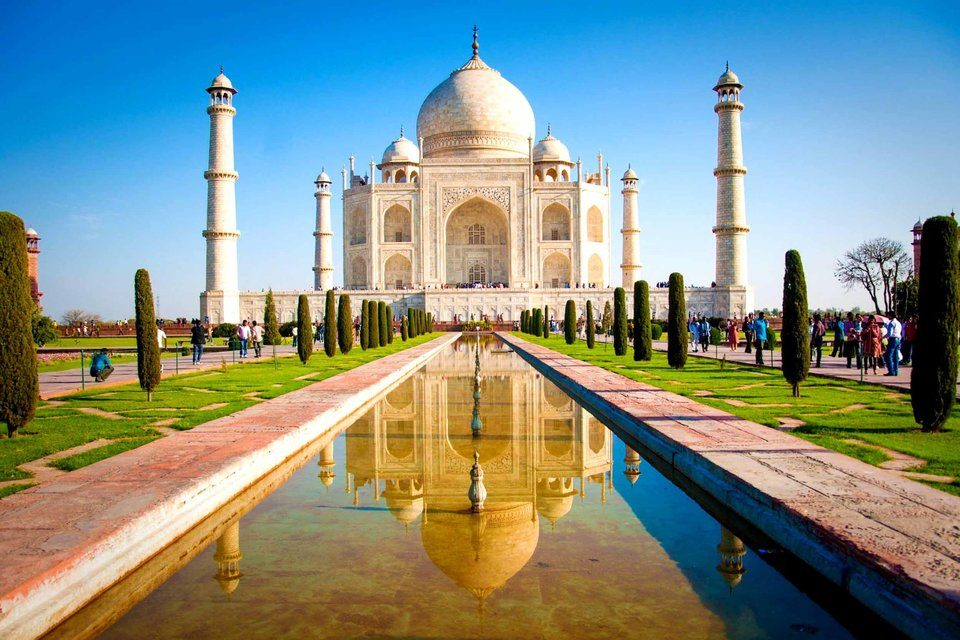
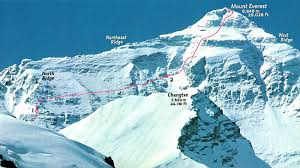
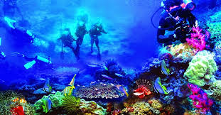
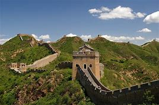
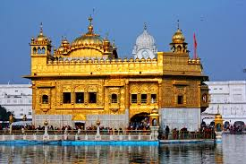

The largest Continent on Earth, Asia consists of a varied geography and a long history. A number of ancient civilizations settled in the region and left their relics in the form of amazing monuments and structures. At the same time, there are also many natural wonders in the region which attract interested tourists from all parts of the globe. Discover some of the most spectacular of these landmarks through the following discussion.
    Ko Samui, Thailand’s second largest island, lies in the Gulf of Thailand off the east coast of the Kra Isthmus. It's known for its palm-fringed beaches, coconut groves and dense, mountainous rainforest, plus luxury resorts and posh spas. The landmark 12m-tall golden Big Buddha statue at Wat Phra Yai Temple is located on a tiny island connected to Ko Samui by a causeway.
The Si Phan Don is a riverine archipelago in the Mekong River, Champasak Province in southern Laos. Si Phan Don is part of the Khong District, including the islands and part of the mainland in the east. Si Phan Don is dotted with numerous islands, half of which are submerged when the Mekong River is in flood.
The town of Ubud, in the uplands of Bali, Indonesia, is known as a center for traditional crafts and dance. The surrounding Ubud District’s rainforest and terraced rice paddies, dotted with Hindu temples and shrines, are among Bali’s most famous landscapes. Ancient holy sites include the intricately carved Goa Gajah (“Elephant Cave”) and Gunung Kawi, with its rock-cut shrines.
Batad is a village of fewer than 1500 people, situated among the Ifugao rice terraces. It is perhaps the best place to view this UNESCO World Heritage site. The landscape is truly stunning and the nearby waterfall offers a lush swimming point (if you have the energy to hike there and back, around 1 hour each way)
Take some time to unwind and recharge in the serene, unspoiled paradise of Myanmar’s MacLeod Island. One of Southeast Asia’s less frequented destinations, the Mergui Archipelago is a vast area off the west coast of Myanmar in the Andaman Sea. It is dotted with more than 800 tropical islands – one of which is MacLeod Island.
Hanoi, the capital of Vietnam, is known for its centuries-old architecture and a rich culture with Southeast Asian, Chinese and French influences. At its heart is the chaotic Old Quarter, where the narrow streets are roughly arranged by trade. There are many little temples, including Bach Ma, honoring a legendary horse, plus Ð?ng Xuân Market, selling household goods and street food.
Siem Reap, a resort town in northwestern Cambodia, is the gateway to the ruins of Angkor, the seat of the Khmer kingdom from the 9th–15th centuries. Angkor’s vast complex of intricate stone buildings includes preserved Angkor Wat, the main temple, which is pictured on Cambodia’s flag. Giant, mysterious faces are carved into the Bayon Temple at Angkor Thom.
...And Many More...